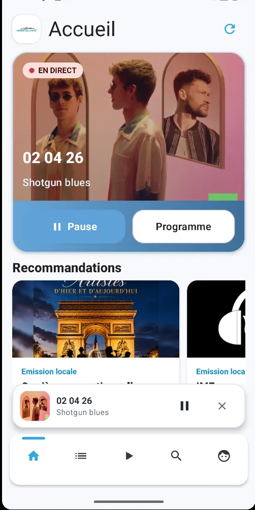
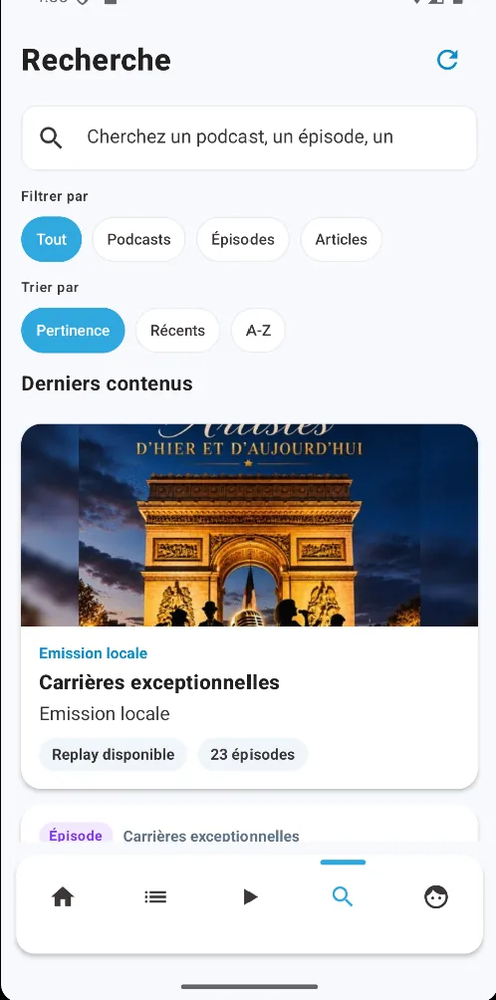
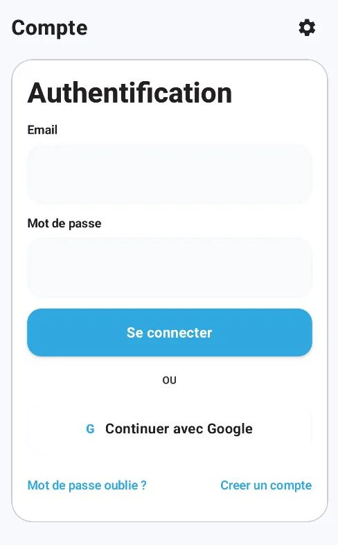

Stage BUT2 · étude de cas
Application mobile Fréquence Amitié Vesoul
Création de zéro de l'application Android de la radio : direct, podcasts, recherche, compte et notifications, reliée à une API PHP que j'ai déployée sur OVH.
- Durée
- 8 semaines
- Période
- Avril – juin 2026
- Rôle
- Développeur de l'application mobile
- Équipe
- Binôme (app + site web)
Application interne à la radio : code non public.
01Contexte
- Cadre : stage de fin de BUT2, 8 semaines (avril – juin 2026).
- Structure : Fréquence Amitié Vesoul, radio associative.
- Équipe : je travaillais en binôme avec un autre stagiaire, chargé du nouveau site web, avec des échanges réguliers avec l'équipe et le tuteur. Le site et l'application partagent le même backend.
- Mon rôle : concevoir et développer de zéro l'application Android, puis mettre en production l'API qui l'alimente.
02Le problème de départ
La radio n'avait pas d'application mobile. Elle voulait un point d'accès clair, rapide et stable vers son direct et ses émissions, capable d'afficher des contenus qui changent chaque jour et de prévenir les auditeurs de l'actualité de la radio.
03Fonctionnalités principales
- Navigation à 5 onglets (Accueil, Podcasts, Direct, Recherche, Compte), écrans de détail et liens profonds.
- Écoute du direct en arrière-plan, avec un lecteur toujours visible, la pochette du titre en cours, les paroles et un égaliseur.
- Podcasts : catalogue, téléchargement, historique, commentaires et likes.
- Compte : connexion par e-mail ou Google, session conservée de façon sécurisée.
- Notifications qui ouvrent l'application sur la bonne page.
- API PHP + MySQL : articles, bannières, podcasts, grille des programmes, suivi d'écoute.

L'accueil regroupe le direct (bandeau « En direct » avec le titre en cours), les recommandations d'émissions et, en bas, le lecteur qui reste affiché sur tous les écrans. Dans la barre à 5 onglets, un trait au-dessus de l'icône marque l'onglet actif : c'est l'onglet parent recalculé pour chaque écran de détail (défi 1).

Un seul champ cherche à la fois dans les podcasts, les épisodes et les articles. Les filtres (Tout, Podcasts, Épisodes, Articles) et le tri (pertinence, récents, A-Z) s'appliquent aux mêmes résultats ; tant que rien n'est saisi, les derniers contenus s'affichent.

Le formulaire vérifie l'e-mail et le mot de passe avant l'envoi et propose la connexion Google. Derrière cet écran, l'authentification hybride (défi 2) bascule sur le dépôt local si le serveur ne répond pas ; le jeton de session est stocké chiffré sur le téléphone.
04Architecture
- App Android
- Interface en Jetpack Compose, navigation à 5 onglets, lecture audio dans un service Media3, appels réseau avec Retrofit.
- API PHP
- API REST hébergée sur OVH : articles, bannières, podcasts, programmes, comptes et suivi d'écoute, avec un endpoint /health.
- MySQL
- Tables des contenus éditoriaux, des comptes, des commentaires et de l'historique d'écoute.
S'y ajoutent Firebase Cloud Messaging pour les notifications et le flux audio du direct.
05Défis et solutions
- Garder une navigation stable avec beaucoup d'écrans.
Quand on ouvre un épisode depuis la recherche, l'onglet actif doit rester le bon. J'ai centralisé toutes les routes dans une seule énumération (
AppDestination) et calculé l'onglet parent de chaque écran de détail. - Se connecter même quand le serveur ne répond pas.
J'ai mis en place une authentification hybride : un dépôt local et un dépôt distant, réunis derrière une seule interface, avec le jeton stocké chiffré sur le téléphone.
- Continuer la lecture audio quand l'application passe en arrière-plan.
J'ai fait tourner la lecture dans un service Android (Media3 / ExoPlayer), séparé de l'interface, avec un lecteur persistant affiché par-dessus les écrans.
- Relier l'application à un vrai serveur.
J'ai créé une API REST en PHP, déployée sur un hébergement OVH mutualisé, avec un endpoint
/healthpour vérifier le service avant chaque mise en production.
Appel de l'endpoint /health de l'API hébergée sur OVH depuis un terminal : la réponse {"status": "ok"} confirme que le serveur répond avant de publier une version de l'application (défi 4).
06Démarche
Cadrage la première semaine (recueil des besoins, choix des écrans prioritaires), maquettes, puis développement par blocs fonctionnels : écran principal, lecture audio, recherche, notifications, compte et intégration du backend. Chaque bloc était testé sur mobile avant de passer au suivant, ce qui limitait les régressions. J'ai aussi rédigé un guide de transition pour une future version iOS (SwiftUI).
07Ce que j'en retiens
| Savoir-faire | Avant le stage | Après le stage |
|---|---|---|
| Architecture d'une application mobile | navigation simple, peu d'états partagés | socle stable pour une cinquantaine d'écrans et de composants |
| Intégration d'API et backend | consommer une API existante | concevoir, déployer et surveiller ma propre API |
| Organisation et autonomie | tâches guidées | périmètre complet géré seul, découpé en phases |
Ce que je retiens surtout : un livrable, ce n'est pas seulement du code, c'est un ensemble compréhensible, testable et maintenable par quelqu'un d'autre.
08Évolutions possibles
Publication sur le Play Store, version iOS (le guide de transition est prêt), tests automatisés de l'interface.